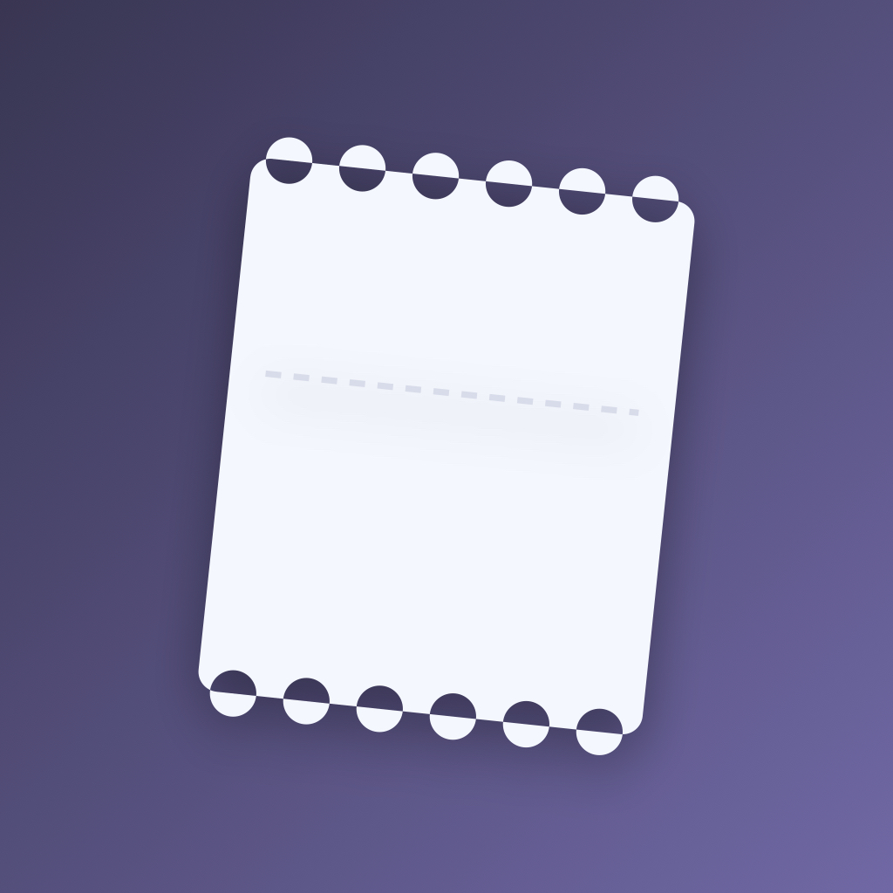
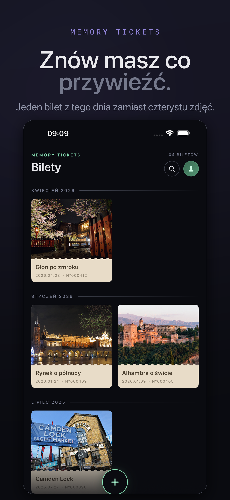
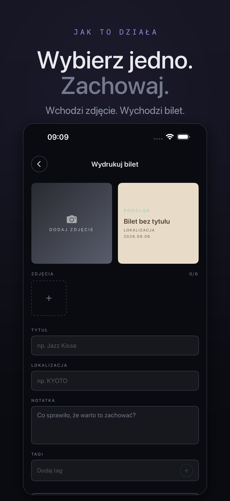
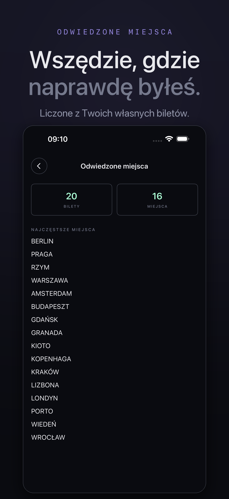
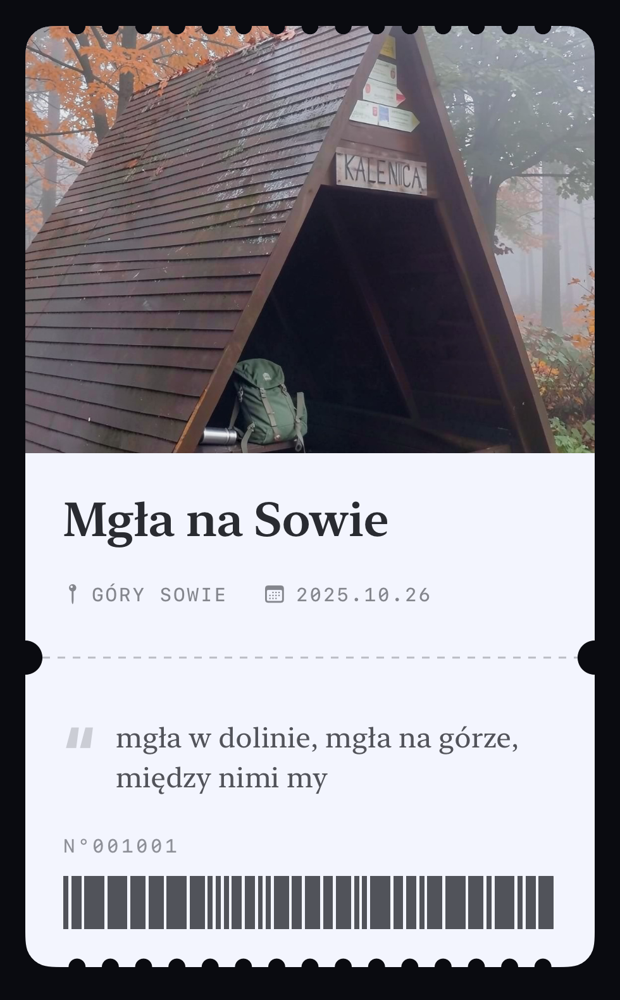
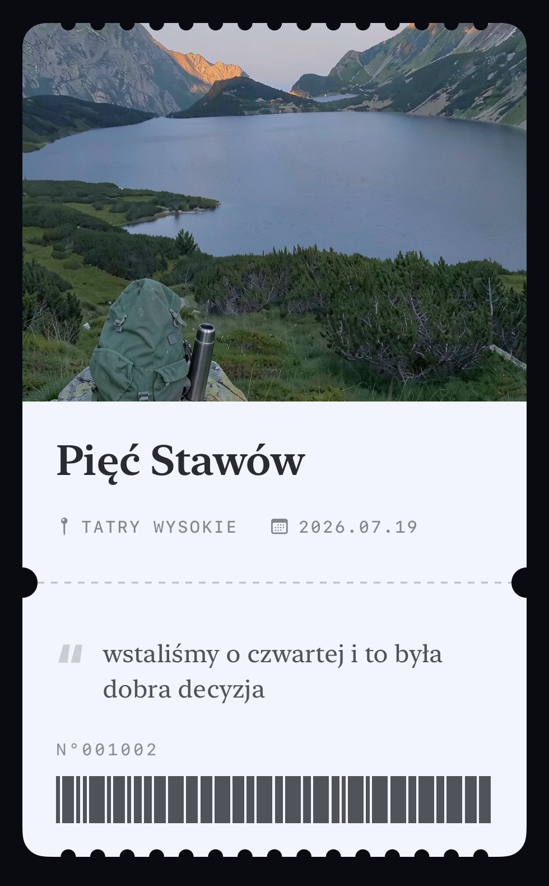
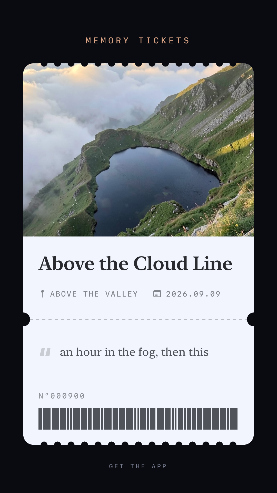

Aplikacja na iPhone'a, która z jednego zdjęcia robi bilet-pamiątkę: tytuł, miejsce, data, kod kreskowy i jedno zdanie o tym dniu. Bez konta, bez chmury — zdjęcia zostają w telefonie. Po polsku i angielsku. Darmowa, z opcją Pro.
App Store: apps.apple.com/pl/app/memory-tickets/id6808647945
Premiera: 10 września 2026 · Autor: Szymon Biczysko, solo, Polska · Kontakt: przez App Store Connect / X







Wszystkie pliki można pobierać i używać w publikacjach o aplikacji.